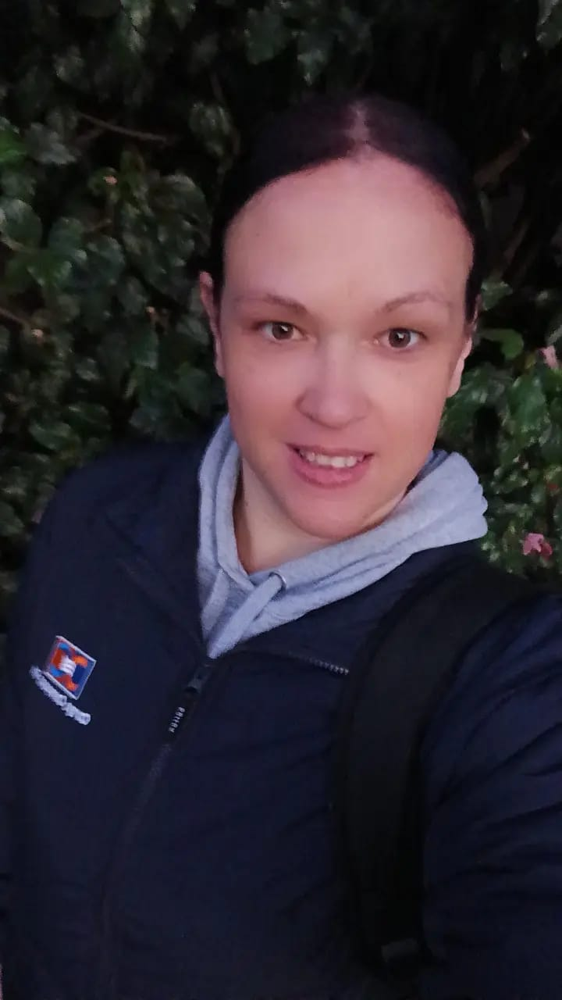

Curriculum Vitae
Theresa Anne van der Walt
📞 +27 67 699 6027 | ✉️
tezvdwalt@live.co.uk | 🔗
LinkedIn
| 📍 66 Homestead Gardens, Farrarmere, Benoni

Objectives
Experienced Client Relationship Manager with a demonstrated history
of working in the IT and services industry. Skilled in Helpdesk Support,
Accounts Payable, Accounts Receivable, Import/Export Operations,
Software Development, and Customs Regulations. Strong problem
solver and logical thinker who loves new challenges.
I have spent the last 11 years doing software support and trying to learn
SQL scripting and coding in my own capacity. I have always wanted to go
into this field but until now never really had the opportunity as everyone
requires experience. I started with the Hyperiondev bootcamp and this is
my new attempt to change my path.
My motivation has always been my children. Being a single mother I have
always wanted to be a good role model, now that they're older my
motivation has switched from them to me. I want to do things that matter
and make me happy.
Experience
Cargo Compass SA, Isando, South Africa
Software Support Consultant (May 2021 – Present)
- In-house software support and SQL database administration.
-
Prepare and implement roll-out and training projects with minimal
disruption.
-
Create SQL queries and customized reports as per user and management
specifications.
- Provide training and documentation to users as needed.
Advanced Customs Solutions, Kempton Park, South Africa
Helpdesk Support Technician (Feb 2019 – Jul 2020)
- Prepare and implement roll-out and training projects.
- Troubleshoot software issues efficiently.
-
Develop SQL queries and custom reports per user and management requests.
- Maintain high-level and professional communication.
Education
2008
- C.L.A.I.T. (Computer Literacy & Information Technology)
- E.C.D.L. (European Computer Driving License)
2001
- Matric Certificate - Wordsworth High School
-
Subjects Passed on Higher Grade: English, Afrikaans, Mathematics,
Science, Geography, and History
Software Proficiency
-
Pastel Evolution, Microsoft Office, Ship Shape Software, CargoWise –
Wise Tech, SSMS – SQL Server Management Studio, Visual Studio